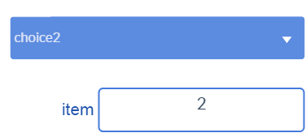
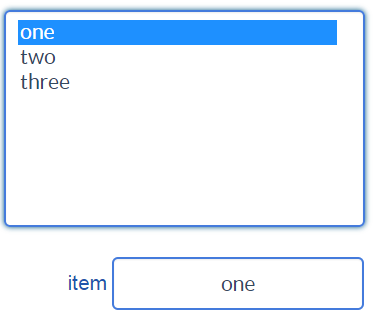
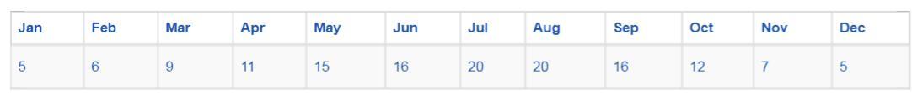
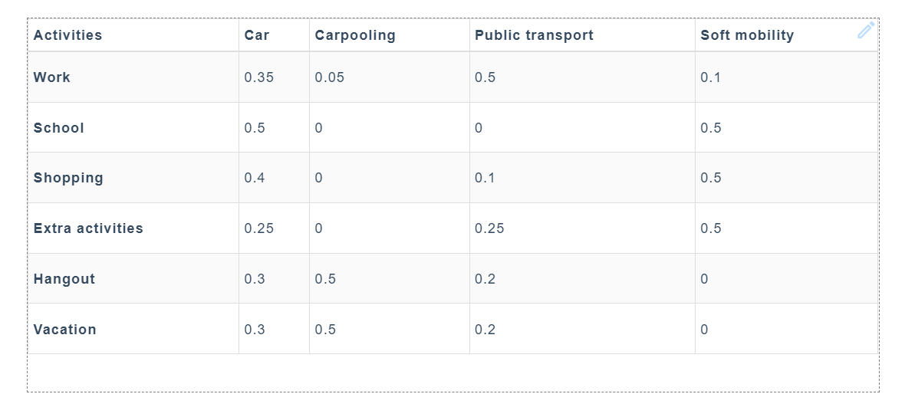

Basic inputs and controls¶
Basic inputs and controls widgets allow the dashboard end-user to set numeric values (such as Horizontal slider or Numeric input widgets), binary values (such as Checkbox or Switch widgets) or text values (such as Text input widget). More complex ones operate on lists or arrays (like select or list). Some examples are illustrated below.
All these widgets can only be connected to a dataNode-types with setValue from widget or setValue from file capabilities.
Numeric input¶
Numeric input is a numeric input widget, which is intended to operate on the primitive datatype number.
Among its parameters (in tab, "Graphical Properties") :
- validationButton : adds a validation button to the right of the widget. When the validation button is clicked, the widget content is written to the connected dataNode.
- validationOnFocusOut : when focus is lost, widget content is written to the connected dataNode. The default value is true.
- isPassword : hides edited text as a password
- decimalDigits : decimal precision of number. Default value is 3
Text input¶
text input is a text input widget, which is intended to operate on the primitive datatype number.
Among its parameters (in tab, "Graphical Properties") :
- validationButton : adds a validation button to the right of the widget. When the validation button is clicked, the widget content is written to the connected dataNode.
- validationOnFocusOut : when focus is lost, widget content is written to the connected dataNode. The default value is true.
- isPassword : hides edited text as a password
Horizontal slider¶
Horizontal slider allows to set the value of a dataNode field of primitive datatype "number", between its min and max parameters. The step parameter controls the slider increment value.
Vertical slider¶
Similar to the Horizontal slider above with a different orientation.
Double slider¶
This slider has two handles, allowing to set both a minValue and a maxValue ranging between the values of minRange and maxRange parameters. When rangeActuator parameter is set to true, new minRange and maxRange actuators appear in the "Data connection" tab, enabling to set these actuators from other dataNodes.
Checkbox¶
Checkbox widget allows to set the value of a boolean dataNode field.
Switch¶
Similar to Checkbox
Simple switch¶
Allows to set discrete values.
Push button¶
Push button widget has two different behaviors, depending on its fileInput parameter (located in "Graphical Properties" tab).
- If fileInput is false, the button works as a trigger for connected dataNode (i.e. when the user clicks the button, dataNode execution is forced)
- If fileInput is true, the button works as file reader. When the user selects a file, its content is copied to:
- Variable
- CSV file reader
- CSV file player
- Generic file reader
Examples :
- First, create a sample file Input.json with the following content
{
"length": 25,
"width": 10
}
Then run buttons.xprjson
Select¶
Select widget has three actuators:
- keys: an array describing the options that can be selected.
- values: an array describing the corresponding values that can be written. This actuator is optional.
- selectedValue: the dataNode where the selected output will be written, the selected key or its corresponding value, if an array of values has been specified.
With the following array of keys
["choice1", "choice2"]
and an (optional) array of values that the widget will output to the selectedValue actuator when the corresponding option is selected
[1, 2]
If values actuator is not specifed, the selectedValue will contain the value of the item selected in the keys array. Otherwise, the selectedValue will contain the item from the values array corresponding to the selected key.

List¶
List widget expects a JavaScript array as its value input, such as :
["one", "two", "three"]
selectedValue specifies the data source that will contain the selected item from the list.

Example :
Multi-select¶
Example :
Table¶
Table widget expects its value input to reference a JavaScript array, containing subarrays, all of the same dimension, such as :
[
["Jan", "Feb", "Mar", "Apr", "May", "Jun", "Jul", "Aug", "Sep", "Oct", "Nov", "Dec"],
[5, 6, 9, 11, 15, 16, 20, 20, 16, 12, 7, 5]
]
This array will be displayed as :

Example : table.xprjson
Table may be editable if it is connected to a variable-type dataNode. Editable property can be set in a column-basis using the parameter editableCols. For example, if editableCols equals [0,1,2], columns 0, 1 and 2 are editable (i.e. cells in these columns, excluding headers, can be modified). The modifications will be assigned to the connected variable-type dataNode.
Tables and editable tables may also be two dimentional.

Examples :